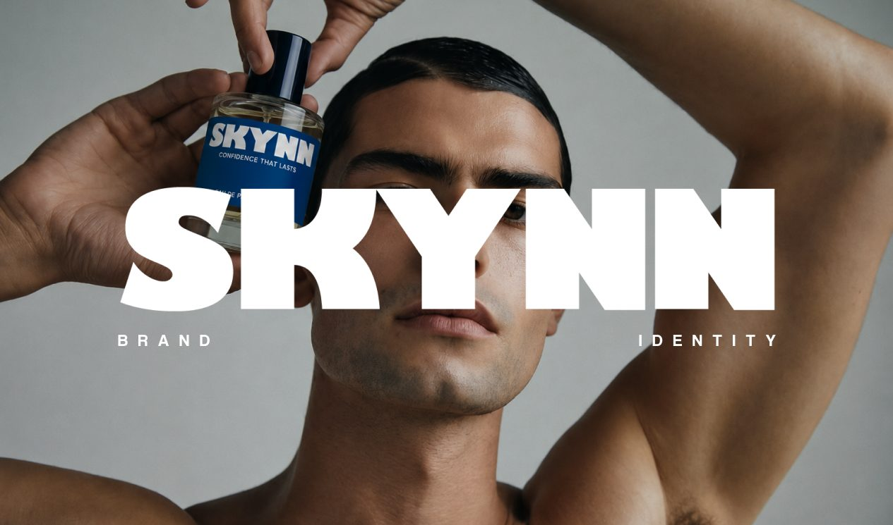
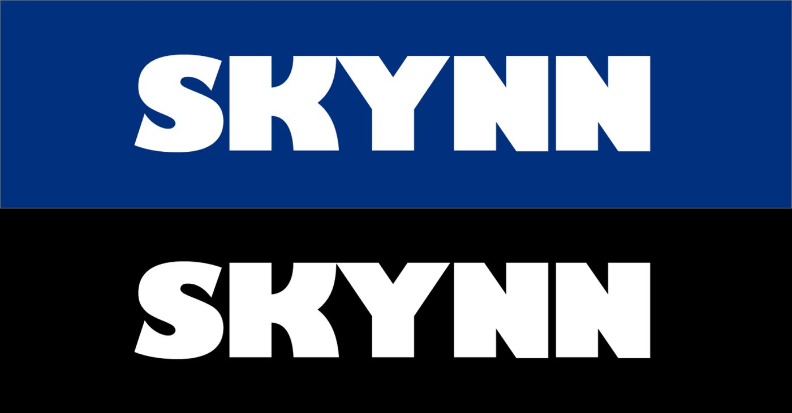
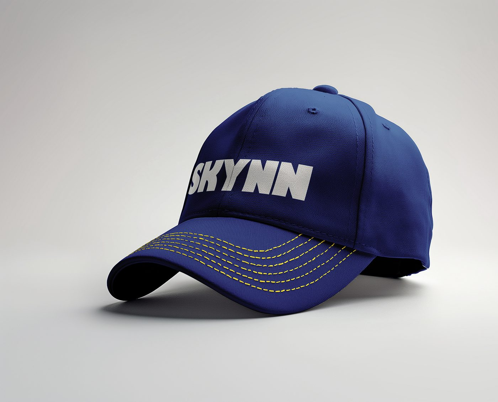
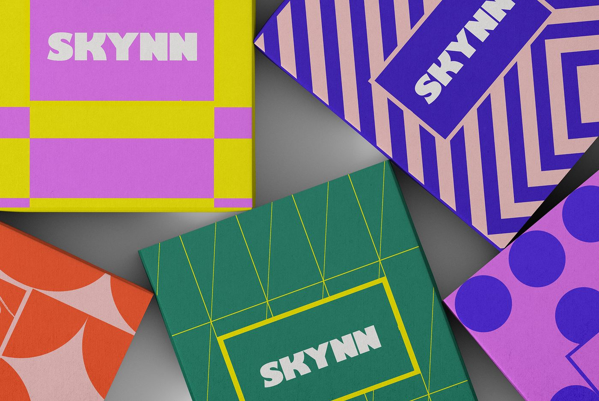
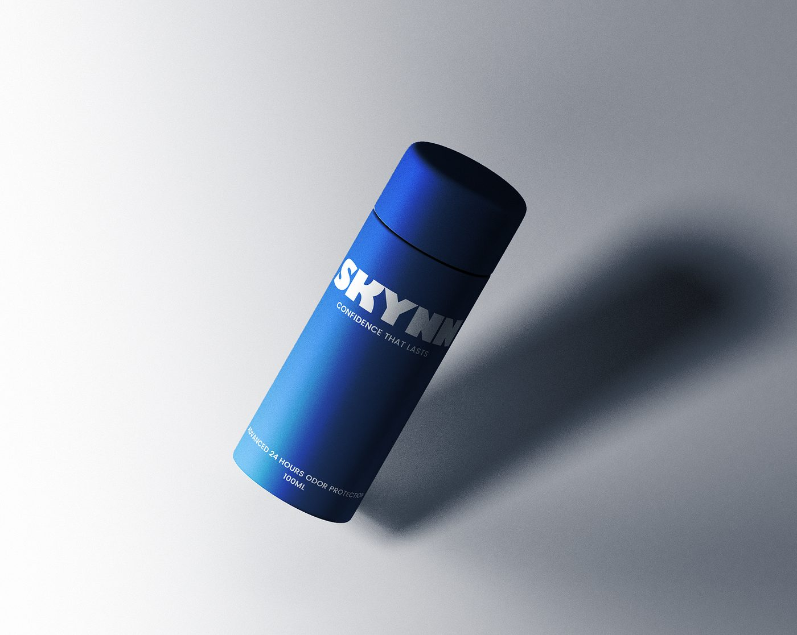
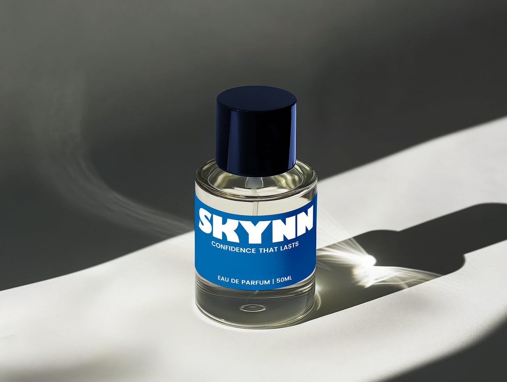
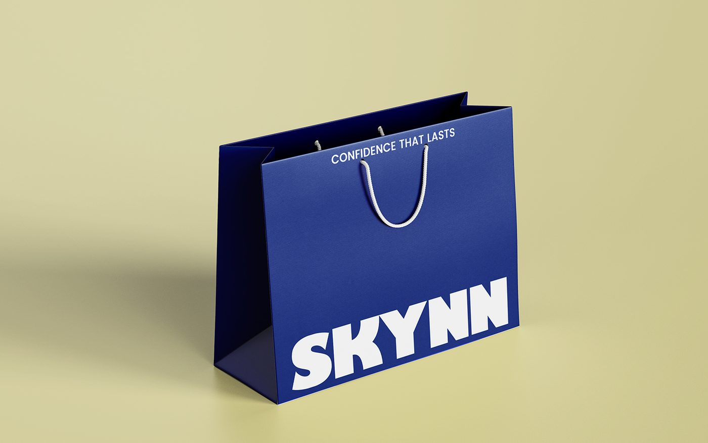

// case study
A bold, modern identity for a premium fragrance label, built through strong typography, refined color contrast, and versatile brand applications.

The goal was to create a memorable and premium visual identity for SKYNN that communicates sophistication, confidence, and modern elegance. The challenge was to build a brand presence that feels bold yet refined while standing out within the luxury fragrance market.
SKYNN's voice is bold, modern, and unapologetically expressive. The brand communicates confidence through a tone that feels direct, contemporary, and elevated with sophistication. Its personality balances strength with minimalism, creating a presence that feels aspirational, fearless, and premium.
The identity system was developed through bold typographic exploration supported by a high-contrast visual language. A striking palette of deep blue, black, and white was chosen to create strong recognition and premium recall, while clean structural compositions ensured consistency and adaptability across multiple brand touchpoints.

The final identity positions SKYNN as a confident and elevated fragrance brand with a distinctive visual presence. The bold typography, sharp contrast, and minimalist execution create a cohesive system that communicates contemporary luxury with clarity and impact.
The visual identity was translated across packaging, product mockups, shopping bags, promotional merchandise, and branded accessories. Each application reinforces SKYNN's premium positioning while demonstrating the flexibility and consistency of the brand system across physical and digital experiences.





// thank you
If SKYNN's approach to bold, minimal identity work resonates with what you're building, I'd love to hear about it.
✉ Get in touch// more projects